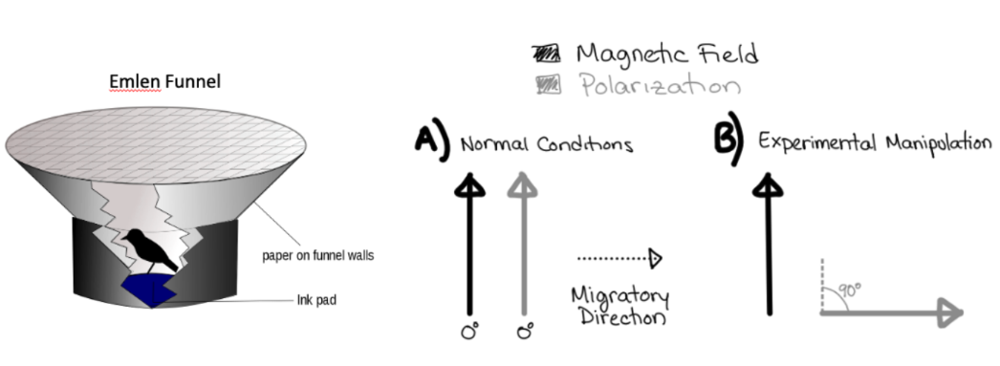

Understanding Behavior
Understanding Behavior¶
Deadline
Due by 11pm on Wednesday May 10.
Honor Code
This exam is open note/book/web, but must be done independently. Do not consult any other people (regardless of whether they are in or out of this course) or artificial intelligence (AI) in answering the questions. Handing in responses to the assignment for grading serves as your signature of the honor code.
Answer all questions either electronically or by hand. Label each of your answers with the corresponding question number. Scan or convert your document to a good quality PDF. Upload to gradescope by the deadline – make sure to tag all appropriate page(s) in your PDF for each question.
Please don’t hesitate to ask for clarifation on the wording of questions and/or expectations. Key expectations are highlighted with font style. For any multiple choice question that asks for an explanation of your reasoning: provide a correct answer selection as well as your reasoning for selecting that answer - the reasoning should logically (and unabiguously) explain for your answer selection. Not all multiple choice questions require for reasoning.
Q1 (2 points): Which of the following must be true to explain why the fish predated by tentacled snakes have a “c-start escape” response (in terms of evolutionary mechanisms)?
(choose the one correct answer)
a) In order for tentacled snakes to catch them, the fish must have a less stereotyped c-start behavior
b) the fish must also have predators that cannot perform the j-shape predatory technique of tentacled snakes
c) the fish predated by tentacled snakes must respond more slowly to startling stimuli
d) the tentacled snake must gain a fitness benefit from the c-start escape behavior of the fish
Q2 (2 points): What aspect of reflexes and fixed action patterns makes it possible for “code breaking” behavior phenotypes to evolve (like the j-shape hunting technique of the tentacled snake)?
Reflexes and fixed action patterns are (choose the one correct answer):
a) stereotyped responses linked to specific stimuli (eg. sign stimuli)
b) learned
c) maladaptive for the responding animal
d) driven by neural mechanisms
e) genetically inherited
Q3 (2 points): Refer to the material from Witlinger et al (2007) that we covered in class to fill in the following blanks.
To obtain information about ___________________ during navigation, ants keep track of their
__________________. Therefore, if you ____________________ the length of their
_________________, the ants will overestimate this value.

{kind=link}
Figure 1: Experimental conditions used to test whether birds use magnetic field (black) or light polarization (gray) cues for navigation. A) In the normal (control) condition, magnetic field and light polarization (grey) cues were both available to the birds in an orientation that matched its normal environmental. The dotted arrow shows the attempted migratory direction measured from birds in an Emlen Funnel (left). The birds were headed 90 degrees relative to the magnetic field and light polarization reference cues. B) In the experimentally manipulated condition, the magnetic field cue was oriented in the same direction as in A, but the polarization cue was oriented 90 degrees relative to its orientation in A.
Q4 (2 points): Draw the predicted migratory direction that a bird would try to embark on if the experimental manipulation in B was performed and the bird only uses magnetic field cues (make sure the drawn direction is clear relative to the directions in Figure 1A).
Q5 (2 points): Draw the predicted migratory direction that a bird would try to embark on if the experimental manipulation in B was performed and the bird only uses light polarization cues (make sure the drawn direction is clear relative to the directions in Figure 1A).
Q6 (2 points): From the results of the experient shown in Figure 1, you would be able to conclude whether migratory behaivor is genetically inherited or learned in these birds.
(Choose the one correct answer.)
TRUE/FALSE
{kind=link}
Figure 2 Genetic basis of burrowing behavior. A) Burrowing behavior of two species of Peromyscus mice. P. polionotus dig more complex burrows than P. maniculatus. B) Scatterplot of the mean (circles) and standard deviation (diamonds) of burrow complexity measured in the parental generation of Peromyscus mice (both maniculatus and polionotus species). C) Scatterplot of the behavior of offspring (tested as adults) that were either cross-fostered or raised by their birth parents (not cross-fostered). The species label for the cross-fostered offspring refers to the species of the offspring themselves, not the parents that they were raised by.
Q7 (4 points): What would you conclude about the genetic basis of burrowing behavior if given the mock/predicted results depicted in Figure 2B&C and why? (2-3 sentences).
Q8 (2 points): Which of the following is a correlational (not causal) result from the research of Bendesky et al
(2017) that provides evidence for the hormonal mechanisms of parental care behavior:
(Choose the one correct answer.)
a) QTL analysis revealed that variation in a region on chromosome 4 was significantly associated with differences in nest quality between species, but not other parental care behaviors.
b) Injection of AVP (vasopressin) into mice decreased nest quality.
c) Species that made better quality nests had higher levels of AVP (vasopressin) gene expression.
Q9 (6 points): You know from the literature that, in two species of Peromyscus mice (polionotus and maniculatus), burrowing behavior and parental care behavior are both genetically inherited rather than learned. Now, you want to determine whether: 1) burrowing phenotypes are genetically linked to parental care phenotypes or 2) they are not genetically linked (ie. both are genetically ‘determined,’ but independently). Use what you know from studies we discussed during the course to describe one experiment that would provide results sufficient for distinguishing between (and therefore testing) these two alternative hypotheses. Define (and describe) the metrics you would use to quantify each behavior. Describe the predicted experimental results that would be consistent with the hypothesis that mating and parental care behavior phenotypes are not genetically linked. (You can - optionally - include a cartoon of the experimental design and/or results if that helps you describe, but it must also be described in words).
Few studies have directly addressed the combined effect of “sexual” and “natural” selection pressures on the evolution of behavior.
Q10 (2 points): In 2-3 sentences, compare and contrast “sexual” and “natural” selection.
One example of research that examines the combined effect of sexual and natural selection comes from the study of a communication system in the túngara frog.
Túngara frogs (Engystomops pustulosus) are a Neotropical species. At night, males produce special vocalizations called “calls”. Calls of male túngara frogs consist of a whine followed by up to seven chucks. The whine is a long-frequency sweep, whereas the chuck is a shorter, louder, lower frequency stack. In this audio clip, the wine is followed by one chuck.
{kind=link}
Figure 3: A spectrogram of a male túngara frog mating call with the whine followed by three chucks. From Gridi-Papp et al1
Female frogs select a mate based on the number of chucks in their call (Figure 4A). Predators ( such as frog-eating bats, Trachops cirrhosus, and blood-sucking flies, Corethrella spp.) use the male túngara’s call to target it for eating (Figure 4B).
{kind=link}
Figure 4: The number of chucks in a male’s call is correlated with its attractiveness to potential female mates (A) and the ability of predators to find and attack it (B). These two factors would be included as selective pressures in an evolutionary model of this communication system.
Interestingly, compared to rural frogs, frogs in urban environments tend to have fewer predators (in urban environments, noise polution negatively impacts the fitness of túngara frogs less than its predators).
Use all of this introductory information from research on túngara frogs to answer Q11-Q16.
Q11 (3 points): Based on the results shown in Figure 4, propose a reasonable optimality theory model for male calling behavior. Propose the model in terms of an algebraic equation and describe the model with words. Make sure to define the factors you are including in your model.
Q12 (2 points): Changes in the environment can change the impact of selective pressures (factors) in evolutionary models. In an environment with more reproductively available females, which of the following would be true (in the context of an evolutionary model for male calling behavior)?
(Chose the one correct answer)
a) Male frogs would be more likely to get a mate.
b) Male frogs would be less likely to get a mate.
c) Male frogs would need to compete more for a mate because the operational sex ratio (M:F) would be larger.
d) Male frogs would need to compete less for a mate because the operational sex ratio (M:F) would be larger.
e) The absolute contribution of predation risk to net fitness would decrease.
Q13 (3 points): In an environment with more reproductively available females, you would predict that:
(Choose the one correct answer and explain your reasoning.)
a) There would be no change in male túngara calling behavior.
b) Rural túngara calls would evolve to have more chucks.
c) Rural túngara calls would evolve to have fewer chucks.
Q14 (3 points): What information/results provided in the introduction would be consistent with the they hypothesis that male calling behavior was under sexual selection pressure by the handicap principle? And WHY?
The frogs’ ear has two different organs that transduce (transform) sound into neural signals (spikes): the amphibian papilla and the basilar papilla. In túngara frogs, sensory neurons in the basilar papilla of the female’s ear are selectively sensitive to (responds with the highest spike rate to) the chuck of the male call compared to the whine (whines don’t activate basilar papilla neurons, but chucks do).
Figure 5 shows a phylogeny of frogs with the character mapping of sender and receiver traits in this communication system. Use it to answer Q15
{kind=link}
Figure 5: Phylogeny of the set of species most closely related to the túngara frog (E. pustulosus). Across this phylogeny, two traits have been mapped: the sensory sensitivity of the female basilar papilla to the chuck, and the existence of chucks after the whine in the male call. For example, E. postulosus females have a basilar papilla that is sensitive to the male chuck and the call of male E. postulosus contains chucks. And, as another example, the basilar papilla of E. pustulatus females is not sensitive to chucks and the call of male E. pustulatus lack chucks (contain only the whine).
Q15 (3 points): Are the data shown in Figure 5 more consistent with the hypothesis that the communication system between male and female frogs evolved based on “chase-away” or “runaway” sexual selection? AND explain your reasoning.
Male túngara frogs are known to “facultatively”” vary the complexity of their calls – when they are alone they produce mostly simple calls (whines with few or no chucks); when they are in choruses, they produce calls with more chucks.
Q16 (OPTIONAL for bonus points) (2 points): Explain this phenomenon using the evolutionary model you proposed in Q11.
“Territorial animals often use signals, such as scent marks, colourful plumage and vocalizations, to advertise territory ownership. In theory, the same signals could also serve as indicators of territorial fighting ability that help individuals assess opponents and avoid unnecessary escalated fights.”2
Q17 (2 points): A communication system in which a signal indicates fighting ability is a system that benefits
(Choose the one correct answer.)
a) the sender
b) the receiver
c) both sender and receiver
“Males with greater access to prey should develop proportionally larger wing spots, and be more likely to win territorial fights after they reach maturity.”2
Q18 (2 points): This could be a prediction of which following hypotheses of sexual selection?
(Choose the one correct answer.)
a) handicap principle
b) exploitation (chase-away selection)
c) indicator principle
d) direct benefits